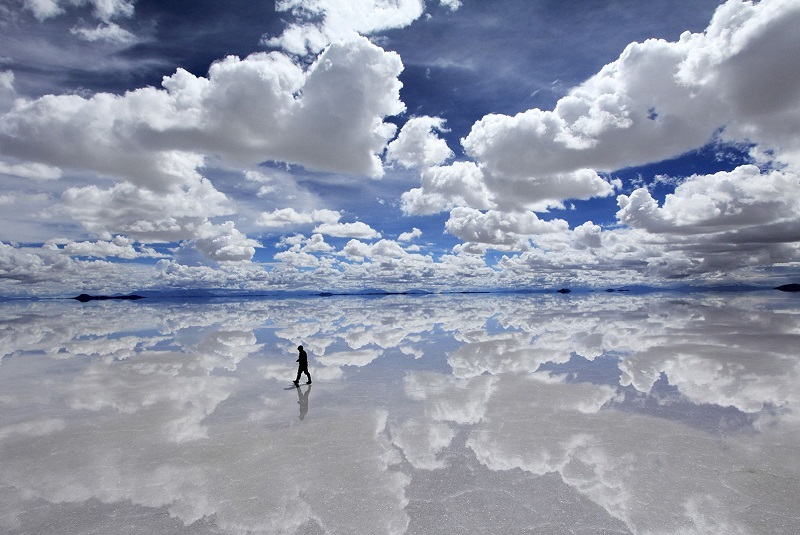

The Most Surreal Places In The World
Surreal, fantastical, unbelievable—all of these words are the perfect descriptors for the following ten destinations. From captivating forests to dramatic cliffs to tiny islands, prepare to be amazed by the world’s most surreal places:
Giant’s CausewayPamukkale